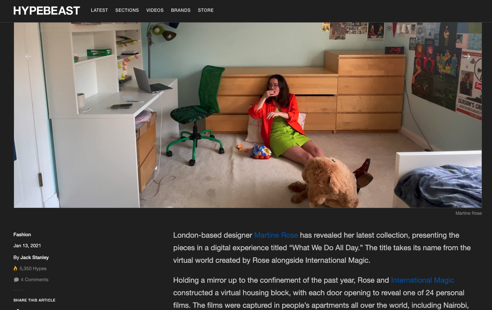

MARTINE ROSE SS21
Yes, I did model in Paris Fashion Week. I worked with U.K. menswear designer
Martine Rose and her team on their SS21 virtual show.
It was a surreal, super cool experience, and I get a lot of questions about it.
Long story short - I used to take daily pictures
of
my outfits on Instagram.
A casting agency found the account and reached out
asking if I was interested in modeling. Duh, I said yes. Then, I worked with Martine Rose
and her team to coordinate the shoot. I set up a tripod and filmed myself hanging out in my room
in pieces from her Spring/Summer 2021 collection.
This is
a great video about the shoot!
Recaps are also featured in
HYPEBEAST,
Highsnobiety,
Dazed, and
Vogue.
